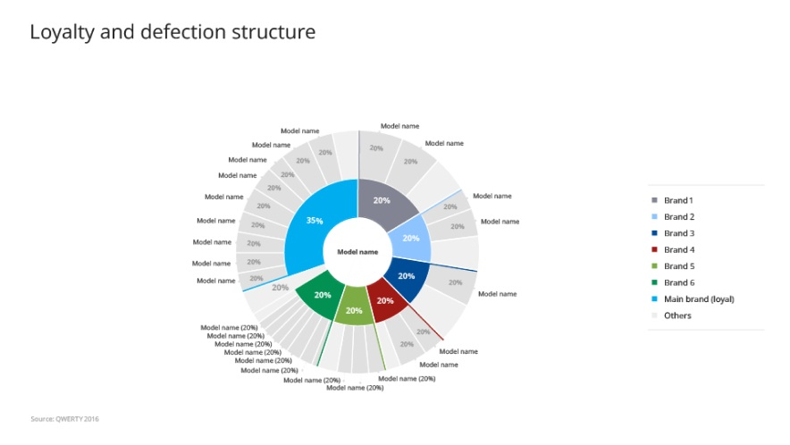
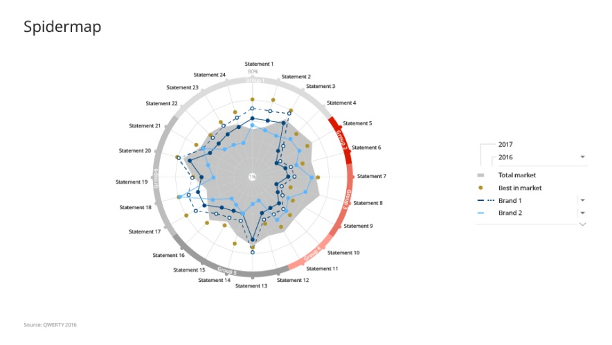

Data visualisations
30+ bespoke interactive data visualisations for deep topical analysis


Overview
mTab's single tenant platform provided dedicated, branded analytics environments for major automotive OEMs including Toyota, Mercedes-Benz, Stellantis, and Volvo.
At its core were two systems: Halo Reports, a tool for customers to analyse data and build their own charts and reports from scratch, and Discover, a more guided analytical and reporting experience.
At the heart of the Discover and Stories modules were mTab's bespoke data visualisations — a set of 30+ micro-applications, each visualising a set of data and letting users view it from different angles to reach the insight faster.
The design team I led was responsible for designing every visualisation and interaction. We worked closely with the Product team, Data Solutions, and customers to gather business requirements, and with Engineering through implementation.
Challenge
The biggest challenge with custom data visualisation was the amount of data we needed to present on each screen, in limited space.
Additionally, each client had unique data structures, studies, branding requirements, and user expectations — yet the underlying product needed to remain consistent and maintainable.
Users ranged from seasoned researchers to business stakeholders who just needed a quick answer. On top of that, the interface for editing and customising slides had grown complex, creating friction for users who needed to make quick adjustments.
A further difficulty was that every visualisation had to be flexible enough to work within each customer's corporate identity guidelines, which meant different colour palettes, fonts, and available layout dimensions.


Approach
I coordinated the design team across multiple clients, with each visualisation treated as its own project. My role was to make sure designers stayed in contact with each other, exchanged ideas, and converged on shared solutions.
I introduced several initiatives to unify and simplify the design process for the data visualisations. We shared work in progress and ran regular design reviews within the team, then took the concepts to product managers and the data scientists on our team. When the concept was ready we had a design review with Engineering to estimate the work and prepare designs for handoff.
The team's goal was to streamline and standardise how users interact with and customise visualisations — reducing unnecessary complexity and creating shared patterns that worked across every visualisation type.
Later, working closely with engineering, we developed a library of common data visualisation elements, patterns, and components — which became a subset of our overall design system.


Outcome
mTab's custom data visualisations became the primary analytics and reporting tool for some of the world's largest automotive brands, serving research teams across global markets. Customers praised the rich, flexible reporting, the unified patterns, and the simplified editing experience — and they remain in use today, even after the move to the more flexible, self-service Halo Reports.
What’s next
Most of the custom data visualisations are currently available to selected customers in Halo. The goal now is to modernise the technology behind them and use them as the basis for templates and ready-to-use visualisations in Halo Reports.





